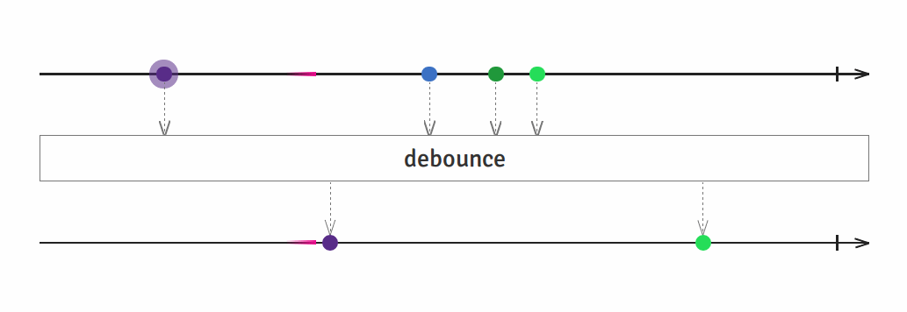

RxJS
-a--c----e-
--b---d----
--a-c-c--e-
Marble Testing
Marble Testing is...

Testing a set of Observables in a synchronous manner, described in Marble Diagrams with a declarative DSL named Marble Syntax.
Marble Diagrams

A marble diagram is composed by timelines with value references that describe the Observable value change over time.
~ also Me
Marble Syntax
-------^-a---(bc)-1---2--|
--[10ms]--^--(abcd)--#
The Marble Syntax is a string sequence that describes events that occur over time. Each character of the sequence represents a frame. A frame is somewhat analogous to a virtual millisecond.
https://github.com/ReactiveX/rxjs/blob/master/doc/writing-marble-tests.md#marble-syntax
--1--2--3--5--8--13--(you will never finish your sprint!!!)--|
TestScheduler
TestScheduler
- It is virtual scheduler (Controls Time).
- Provides helpers.
- Provides an assertion wrapper.
We use the TestScheduler as a substitute, or test double, for the production IScheduler types. Using this virtual scheduler, we can either execute all queued actions, or only those up to a specified point in time.
Virtual Scheduler
A Virtual Scheduler can be conceptualized as a queue of actions to be executed. Each are assigned a point in time when they should be executed.
~ I also stole this one from http://www.introtorx.com
http://www.introtorx.com/content/v1.0.10621.0/16_TestingRx.html
Jest + TestScheduler
RxJS6
The TestScheduler requires to use the test runner's deepEqual assertion. We provide that during instantiation of the test scheduler:
import { TestScheduler } from 'rxjs/testing';
it('Wannabe Marble Test', t => {
const testScheduler = new TestScheduler((actual, expected) => {
expect(actual).toEqual(expected);
});
});
AVA + TestScheduler
RxJS6
The TestScheduler requires to use the test runner's deepEqual assertion. We provide that during instantiation of the test scheduler:
import { TestScheduler } from 'rxjs/testing';
import test from 'ava';
test('Wannabe Marble Test', t => {
const testScheduler = new TestScheduler(t.deepEqual.bind(t));
});
AVA + TestScheduler
back in RxJS5
The TestScheduler requires to use the test runner's deepEqual assertion. We provide that during instantiation of the test scheduler:
import {
TestScheduler,
} from 'rxjs/Rx';
import test from 'ava';
test('Wannabe Marble Test', t => {
const testScheduler = new TestScheduler(t.deepEqual.bind(t));
});
TestScheduler Helpers
RxJS6
The TestScheduler object provides helpers for creating cold and hot observables from a marble syntax timeline.
testScheduler.run(({ cold }) => {
const integers$ = cold(
'--a---b--c--d---|',
{
a: 2,
b: 3,
c: 4,
d: 5,
},
);
});
TestScheduler Helpers
RxJS5
The TestScheduler object provides helpers for creating cold and hot observables from a marble syntax timeline.
const integers$ = testScheduler.createColdObservable(
'--a---b--c--d---|',
{
a: 2,
b: 3,
c: 4,
d: 5,
});
TestSchedulers Assertions
RxJS6
The TestScheduler provides an assertion in the format:
testScheduler.run(({ expectObservable }) => {
expectObservable(streamUnderTest$).toBe(
'--b-----d',
{
a: 2,
b: 3,
c: 4,
d: 5,
}
);
});
TestSchedulers Assertions
back in RxJS5
The TestScheduler provides an assertion in the format:
testScheduler
.expectObservable(streamUnderTest$)
.toBe(
'--b-----d',
{
a: 2,
b: 3,
c: 4,
d: 5,
});
DEMO TIME
Resources
http://rxmarbles.com/
https://www.learnrxjs.io/
http://www.introtorx.com
https://github.com/ReactiveX/rxjs/blob/stable/src/testing/TestScheduler.ts
https://github.com/ReactiveX/rxjs/blob/master/doc/writing-marble-tests.md#marble-syntax
Presentation
https://dance-cmdr.github.io/rxjs-marble-testing/
Repository
https://github.com/dance-cmdr/presentation-rxjs-marble-testing